How does Scher break convention through her design?
Introduction
Throughout her career, which has spanned almost half a century, Paula Scher has consistently challenged traditional design conventions. This can be seen in three key areas - the ways in which she challenges the audience’s perspectives, the ways in which she challenges traditional design formats and finally, in the way that she challenges political mindsets. Taking notable examples of her work, this essay will explore how she successfully breaks convention in these areas.
Early Life
Born in Washington D.C. in October 1948, Scher has become a key influence in this generation within her fields which range from graphic design, painting, illustration and art education. Growing up, she attended weekend classes at the Corcoran College of Art and Design and then became the school publicity chairman, creating the posters for school events and dances. In 1970, when she was 22 years old, she graduated from the Tyler School of Art, Pennsylvania with a Bachelor of Fine Arts. Once Scher graduated, she moved to New York City where she began her professional career working for Random House’s children’s book department as a Layout Artist. From 1972-1982 she held various positions at CBS and Atlantic Records working on album art, before leaving to work for herself for the rest of the 1980s. In 1991 she became the first female partner at Pentagram. She has received multiple awards throughout her career.
Challenging Perspectives
“Typography is painting with words. That's my biggest high. It’s my crack.” 1- Paula Scher A key way in which Scher has challenged perspectives is through her creation of maps. She began designing these in the 1990s. Scher’s maps are colourful, typographical interpretations of various world elements - such as streets, cities, countries and even continents. Scher has created 39 different maps in the form of drawings, prints, paintings and interior applications. Although her Maps appear to be abstract, she interprets the data in unconventional ways, such as through driving time and house prices. By interpreting Maps in this way, she rebels against the inaccuracies that she sees in traditional map designs. 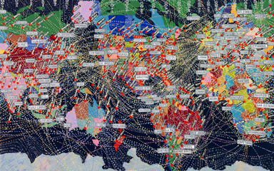 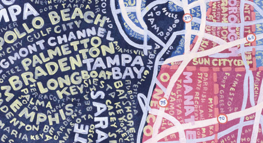 Linked to her maps, she was asked to create two murals for the Queens Metropolitan Campus. Both murals focus on the Queens area. One is a mural of the metropolitan area in New York and the other represents the diversity of the Metropolitan Avenue by including 20 languages which are spoken by the people of Queens. When translating the second mural, Paula was told to translate the words herself so she used Google Translate, which misidentified and misspelled streets and areas in Queens. This broke with convention as the majority of designers ensure everything is correct before creating the final design. The designs gave the students who attended the campus a sense of place even though it was by unconventional means. The murals of her famous typographical maps were shown in every angle, which offered visitors, students and teachers a new perspective on the geography around the city.
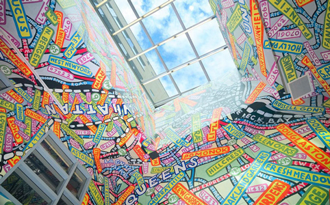 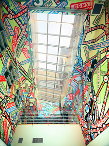 Another way in which Scher has challenged traditional perspectives within learning environments is in the Achievement First school project. Through Pentagram, Scher created a series of environmental graphics to transform the school’s interiors into a visually stimulating place for students to learn. Scher led this project and the final design was created using brightly coloured paint, bold slab serif typography and motivational equations which came from the school to encourage students to aim for success. The reason Scher chose bright colours for this project was to break convention from the dull and safe colour schemes of libraries and school, most of which included beige. The Achievement First school project gave Paula the chance to transform the school and go in the opposite direction from what she grew up knowing.
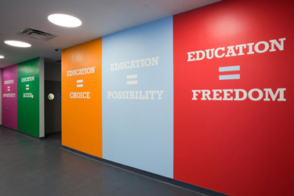 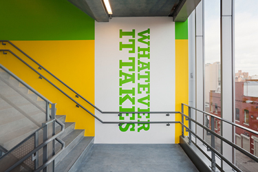
Challenging Traditional Formats
"I look at things that exist now and things that exist in history, then I work with my team to work up what we think is possible.” 2- Paula Scher Scher has been designing and creating the graphic identity for The Public Theater in New York for over twenty years. In designing posters for the theatre, Scher broke with traditional convention by making these text-heavy, using uncommon and older typefaces. Instead of focusing on the actors and actresses, Scher placed emphasis, in posters, on the theatre itself and the show dates, presenting this information in a stylistic way that would be instantly recognised as part of the theatre’s brand identity.
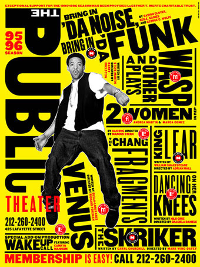 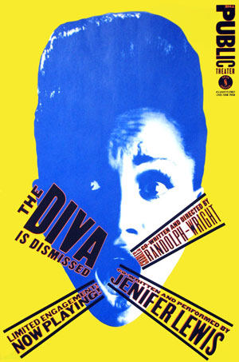 In 2013, Scher worked with architects to design a new lobby for the Public Theater which would create a recognisable link between the building itself and the iconic brand identity that she had crafted. Scher ensures that the theatre’s branding is prominent throughout the building, with the logo displayed on a glass canopy over the entrance steps and across the front desk in the lobby. All of the past posters created by Scher are displayed as part of the box office design. Scher challenged the use of traditional signage by engraving the theatre’s room names into the archways of the lobby, using red and black font to represent the earlier designs made for the Public Theater in the 1990s.
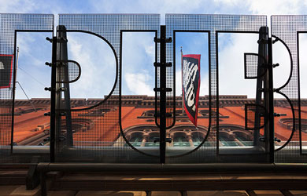 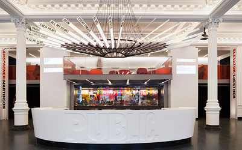 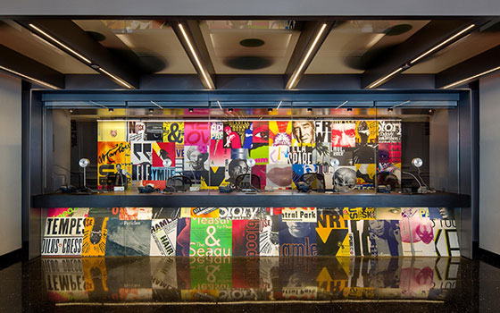 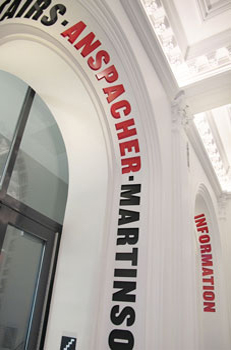The Atlantic Theater is one of the most influential, non-profit theatre companies in New York. It was founded in 1985 and is known for its bold productions by emerging playwrights. Scher sought to represent these bold productions when designing the new identity for the theatre. Atlantic’s artistic director, Neil Pepe, and managing director, Jeffory Lawson, both wanted a graphic identity that would, ‘stand out in the city’s crowded arts landscape.’3 Therefore, Scher created a graphic identity that would match the visual personality of the theatre.
One essential aspect was that the graphic identity would be adaptable each year in order to market new productions, but that it would still show consistency and be recognisable. Scher retains elements of the old logo in the new design by keeping the emphasis on the letter ’A’. However, she takes the trapezium-shaped graphic that she crafts from this and uses it to represent theatrical elements such as a megaphone, a spotlight and as a backdrop when placed in promotional posters and materials. Scher replaced the ‘A’s in the theatre’s name with this graphic so that it would become an instantly recognisable element of the Atlantic Theater’s visual identity.
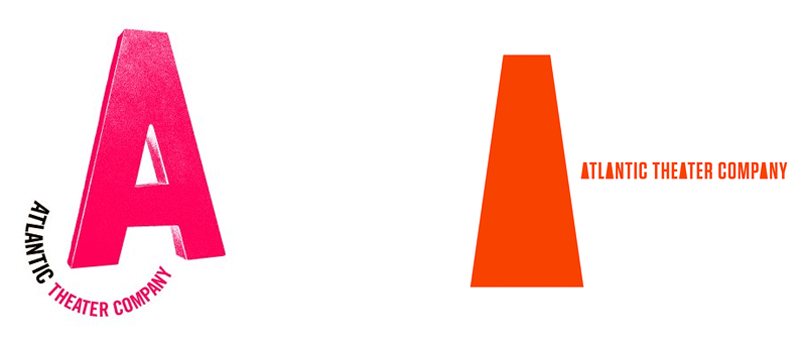 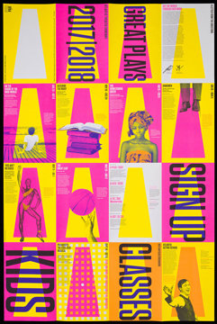 Each year, the world’s best typographic designs are presented at the Type Directors Club’s annual award competition. In 2011, Scher was tasked with creating the brand identity for their 58th awards show. She took inspiration for her bold approach from a series of concentric paintings created by Barry McGee, a graffiti artist and painter from San Francisco. Scher liked McGee’s series because, ‘the form changes but they all look connected,’4 and so she echoed this in her design of the Type Directors Club marketing. Taking a design team of twelve people, Scher tasked each individual with coming up with a design for the letters ‘TDC’ - using only the guidelines that the letters are red, that they radiate, that they have no curves and that their lines are concentric.
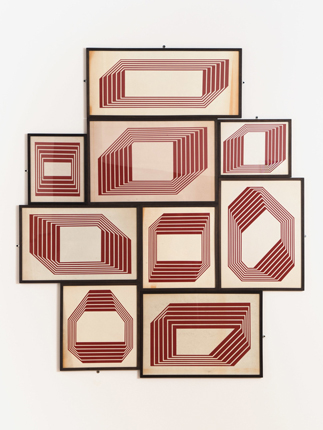 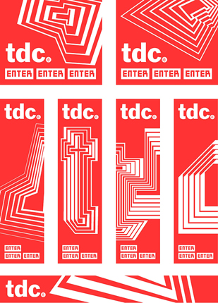
Challenging Politics
"I think we’ve moved from a verbal society to a visual one. People don’t have much patience for reading, as shown by our new president, so we communicate visually.” 5- Paula Scher As well as breaking away from traditional design perspectives and formats, Scher also uses her work to challenge political mindsets and social frameworks. In 2014, Scher was selected to design a large-scale mural for the National Center for Civil and Human Rights in Atlanta. When designing the mural, Scher drew upon the key themes advanced by the Center in order to create a colourful collage that brought together graphics from iconic human rights movements from around the globe. Scher and her design team selected twenty-five historic posters from these various movements to be used as part of the final mural, arranging the graphics so that they centred upon a raised human hand. This design sought to, ‘connect the various movements and highlights them as part of an evolving struggle to protect the human rights of all.’6 The finished installation has inspired staff and visitors at the Center to share personal experiences on social media relating to the movements represented in the mural.
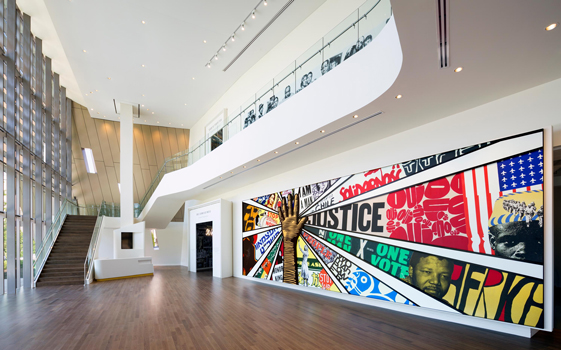 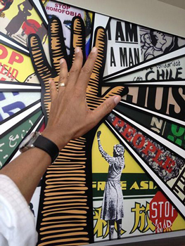 In 2017, Scher was commissioned to create a three-storey high collage in the New York headquarters of Planned Parenthood to celebrate a century of their work in fighting for women’s reproductive and birth control rights. Scher and her design team worked with Planned Parenthood to develop the mural so that it would capture the organisation’s advocation for women to be in control of their own health and welfare. The mural was made up of 30 historic images and posters that represent the movement made by Planned Parenthood since its establishment. Scher managed to incorporate these images into the organisation’s existing colour scheme by using bright yellow to connect this new design with their existing brand identity. When partners from affiliated health care centres saw Scher’s mural in Planned Parenthood’s headquarters, they requested that her designs be incorporated within their own locations so that women across America could be empowered by the messages that she has incorporated.
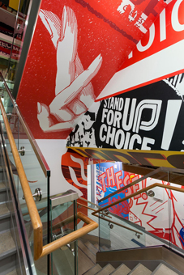 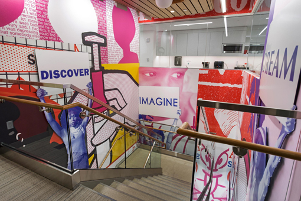
Conclusion
Through her key works, we can see how Scher intentionally breaks away from traditional approaches in design and art. She rebels against collective mindsets, encouraging the viewer to change their perspectives when viewing works such as her maps or educational designs. Scher also rejects the maintenance of the status quo in areas with longstanding traditions, such as the theatre industry, by deliberately breaking design conventions. Her encapsulation of political messages in her art takes her away from the ‘safe’ realm of design work, showing that she is willing to use her skill to challenge social frameworks and opinion. Evidently, it is clear that there is little about Scher’s design work that could be described as traditional.